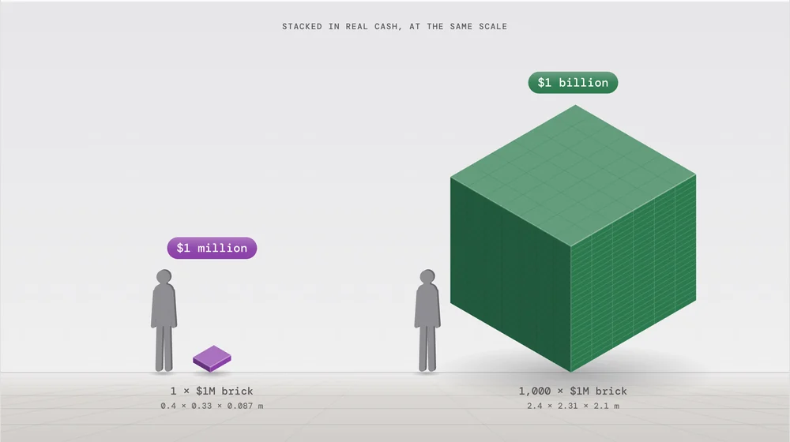
Money
Real cash stacked into a block, with a person beside it.
Eleven categories

Real cash stacked into a block, with a person beside it.
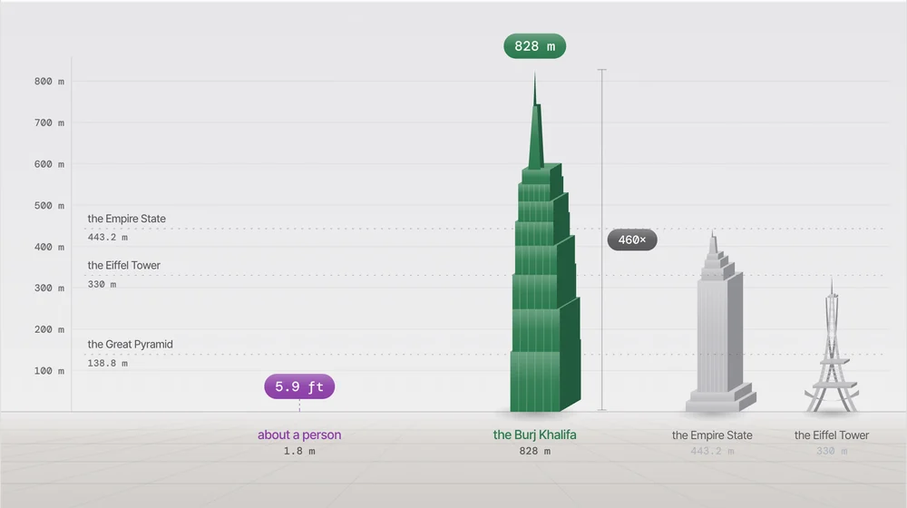
Figures on one ground line, with landmarks behind.
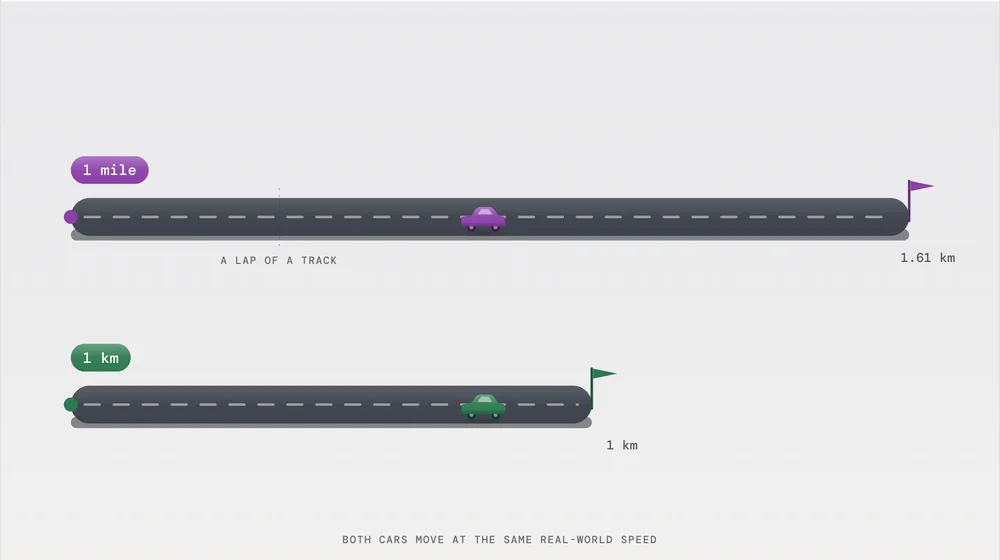
Two roads, and two cars driving at the same speed.
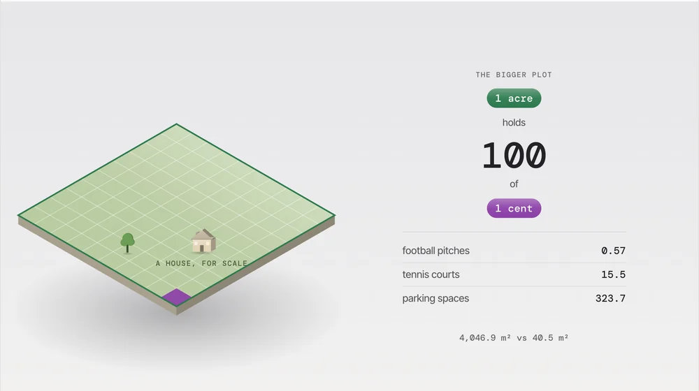
The small plot in the corner of the big one.
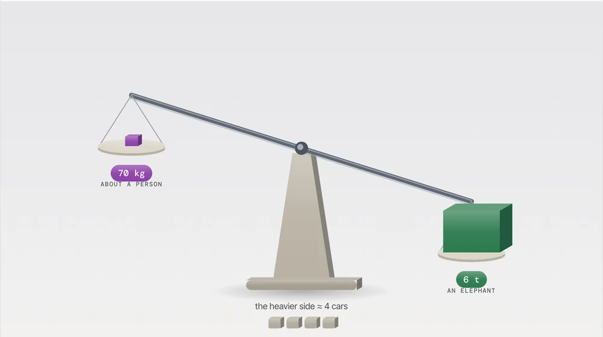
A balance that tips toward the heavier side.
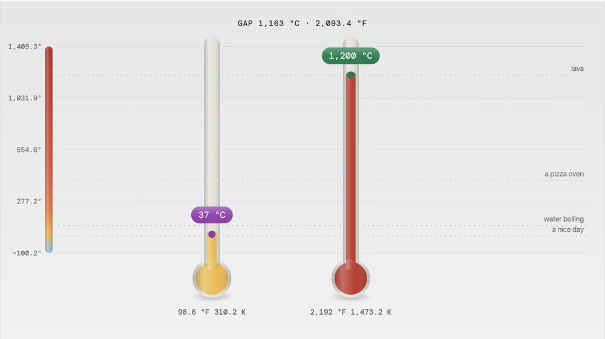
Two thermometers on one shared scale.
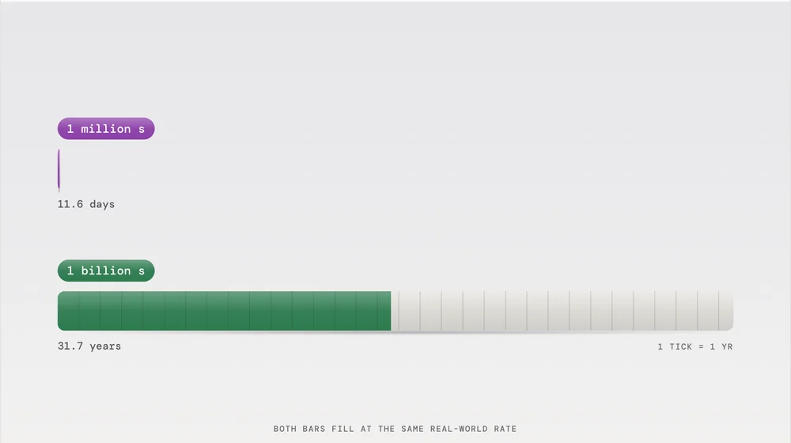
Two bars that fill at the same real rate.
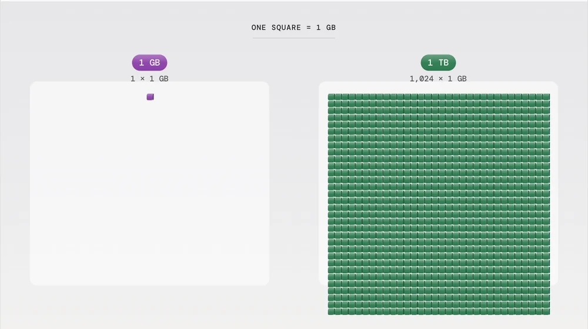
One square per unit, the same size on both sides.
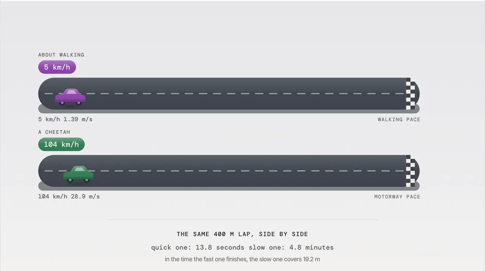
A race down the same 400 m lap.
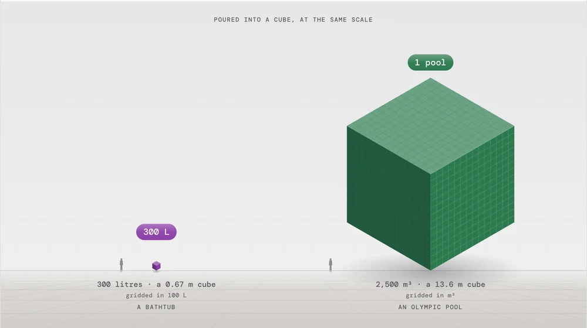
Poured into a cube, next to a person.
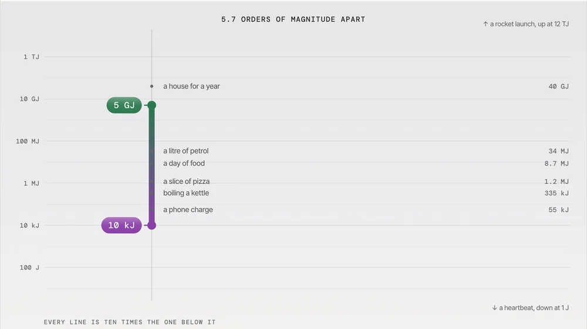
A ladder where each rung is ten times the one below.
Every drawing is a real capture of the working app, at its default pair or one of its ready-made pairs. Violet is always the first amount, green the second.